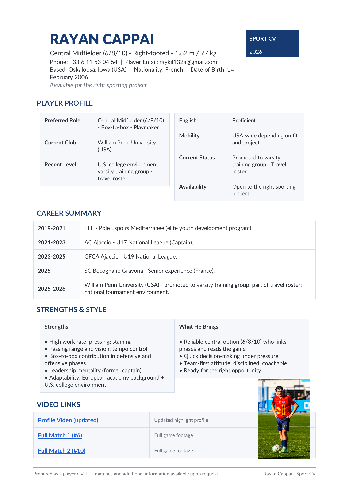

Fall 2026 recruitment · French central midfielder · United States
Rayan Cappai
Central Midfielder · 6 / 8 / 10 profile · Right-footed
Coach-ready midfielder with William Penn University experience, currently competing in Summer League with First State FC / Midnight Riders and already started 3 matches. Built for programs needing a reliable central midfielder who can connect phases, protect possession, and arrive in advanced areas.
Current: First State FC / Midnight Riders
Started 3 Summer League matches
College availability: Fall 2026
Coach Evaluation Summary
Fast evaluation context for college and pre-professional staffs
Rayan projects as a central midfielder who can be evaluated across the 6, 8, and 10 roles. His profile is best reviewed through the highlight video first, then the two full matches for decision-making rhythm, defensive recovery, ball security, and role discipline.
What to review first
- 3-minute highlight video for quick technical and athletic profile
- Full Match #6 and Full Match #10 for match rhythm and role detail
- Sport CV PDF for background, measurements, pathway, and direct contact
Recruitment Snapshot
Key facts at a glance
Concise recruitment data for U.S. college soccer coaches, scouts, and pre-professional evaluators.
Current pathway
Active Summer League player with First State FC / Midnight Riders
Rayan is currently competing in Summer League with First State FC / Midnight Riders and has started 3 matches. His previous U.S. college experience is with William Penn University, and his next college availability is Fall 2026.
Recruitment fit
- Fall 2026 college soccer recruitment
- Pre-professional training and roster evaluation environments
- Programs needing midfield versatility across 6 / 8 / 10 roles
Player profile
Right-footed central midfielder with the tactical flexibility to play deeper as a 6, box-to-box as an 8, or higher between lines as a 10.
Coach-facing profile
French midfielder with U.S. college and current Summer League experience
Rayan Cappai is a 2006-born French central midfielder currently based in the United States. Coaches can use this page to review his highlights, two full-match references, Sport CV PDF, current club status, and direct contact details without requesting extra links first.
Coach video room
Watch the complete evaluation sequence
Start with the short highlight reel, then review Full Match #6 and Full Match #10 before downloading the Sport CV PDF or contacting Rayan directly.
- Watch Highlights
- Watch Full Match #6
- Watch Full Match #10
- Download Sport CV PDF
- Contact Rayan
Fast review
3-min Highlight Video
Quick first look for technical quality, movement, ball security, and midfield range.
Watch HighlightsFull-match review
Full Match #6
Full-match footage for deeper review of positioning, defensive work, and midfield decision-making.
Watch Full Match #6Full-match review
Full Match #10
Additional match context for role flexibility, scanning, tempo control, and actions between lines.
Watch Full Match #10Match Evaluation Notes
Coach notes template
Use these placeholders when sharing notes internally after reviewing the match footage.
Sport CV
Download Sport CV PDF
Download the current Sport CV PDF for measurements, playing background, current pathway, video links, and contact details.
Previous college experience
William Penn University
U.S. college soccer experience
Current club
First State FC / Midnight Riders — Summer League
Started 3 Summer League matches
College availability
Fall 2026
Available for U.S. college soccer recruitment

Download Sport CV PDFAction Photos
Current match photo set
Recent match photos from Rayan’s current U.S. Summer League experience.


Request documents
- Academic transcript available upon request
- References available upon request
- Admissions/eligibility documents available upon request
Academic & Eligibility Documents
Single document request hub for college staffs
College coaches can request academic, admissions, eligibility, and reference documents directly by email. This keeps the evaluation flow clean while preserving access to supporting materials when a program is ready to move forward.
Recruiting fit
Best-fit opportunities
U.S. college soccer Fall 2026
For programs seeking a 2006 French central midfielder with U.S. college experience, current Summer League minutes, and verified video for staff review.
Pre-professional pathway
For development-focused environments that value midfield range, role flexibility, and players prepared to be evaluated through full-match footage.
Club / evaluation setting
For clubs seeking a right-footed 6 / 8 / 10 profile available for direct communication, review, and next-step evaluation conversations.
Contact
Interested coaches and clubs
For Fall 2026 college recruitment, pre-professional evaluation, or club opportunities, contact Rayan directly. Coaches can request transcripts, references, admissions/eligibility documents, or additional match context after reviewing the video sequence and Sport CV PDF.
Email: raykil132a@gmail.com
Phone / WhatsApp: +33 6 11 53 04 54